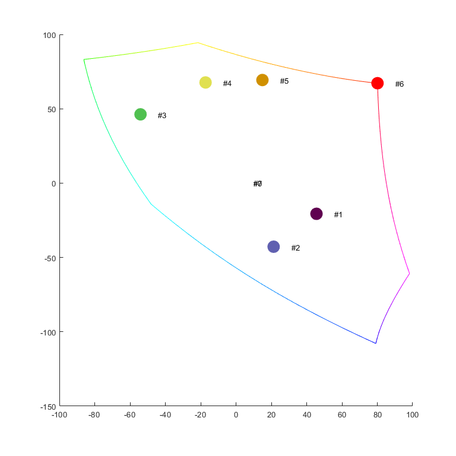
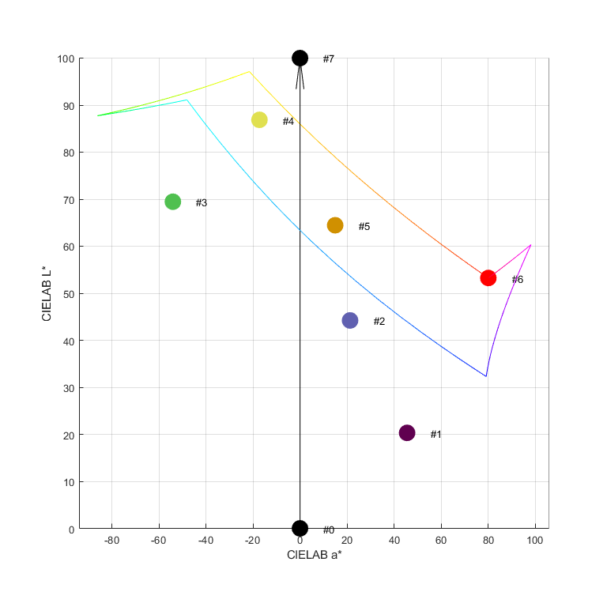
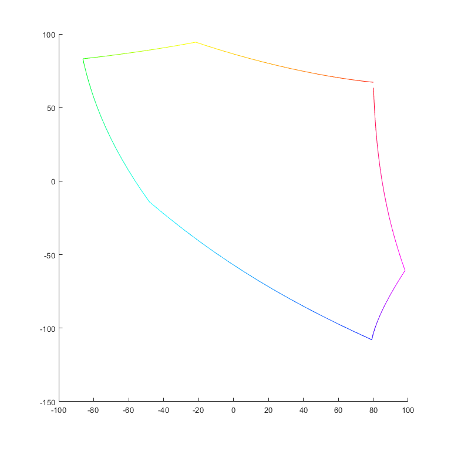

Contents
Show colors as balls in CIELAB with a belt
Generate dE for all pairs
Q: show the color gamut boundaries Q: visualize the color scale proposed by IEC MT41
function color_scale_with_belt
% prepare the RGB points rgb = prep_rgb_max_chroma; lab = rgb2lab(rgb/255); % prepare the RGB points rgb_original = prep_rgb_sample_original; lab_original = rgb2lab(rgb_original/255); % save data rgblab = [rgb lab]; % save('rgblab','rgblab') % xlswrite('rgblab.xlsx',rgblab) % xlswrite('dE.xlsx',dE_allpair) % 3D plot fg = figure('Units','inches','Position',[2 2 8 8]); hold on show_as_lines(lab,rgb) snapnow show_as_balls(lab_original,rgb_original) snapnow % add the Lightness axis quiver3(0,0,0,0,0,100,0,'k') grid on xlabel('CIELAB a*') ylabel('CIELAB b*') zlabel('CIELAB L*') ax = gca; % set the background ax.Color = [1 1 1]*0.85; view(-25,15) drawnow saveas(gcf,'t1.png') view(0,90) drawnow saveas(gcf,'t2.png') view(0,0) drawnow saveas(gcf,'t3.png') % create the animated GIF create_animation return % analyze dE n = size(c,1); dE_array = zeros(n,1); for i=1:n-1 lab1 = lab(i,:); lab2 = lab(i+1,:); dE_array(i,1) = color_difference(lab1,lab2); end dE_sum = zeros(n,1); t_sum = 0; for i=1:n-1 t_sum = t_sum + dE_array(i,1); dE_sum(i,1) = t_sum; end % find steps sol_rgb = zeros(6,3); sol(1) = 1; dE_step = 90; for i = 2:6 t_de = -1; t1 = sol(i-1); t2 = t1; while t_de < dE_step t2 = t2+1; t_de = color_difference(lab(t1,:),lab(t2,:)); end [t1 t2] color_difference(lab(t1,:),lab(t2,:)) sol(i) = t2; sol_rgb(i,:) = c(t2,:); end save('dE_array','dE_array','dE_sum','c','sol','sol_rgb')
Create animated GIF
function create_animation axis vis3d filename = 'color_scale_in_CIELAB.gif' % spin the camera for n = 1:360/10 camorbit(10,0,'data',[0 0 1]) % Capture the plot as an image frame = getframe(gcf); im = frame2im(frame); [imind,cm] = rgb2ind(im,256); % Write frames to the GIF File if n == 1 imwrite(imind,cm,filename,'gif', 'Loopcount',inf); else imwrite(imind,cm,filename,'gif','WriteMode','append'); end end end
end function rgb = prep_rgb_sample_original % these are the original proposed color scale rgb = [0 0 0; 096 000 080; 096 096 176; 080 192 080; 224 224 080; 208 144 000; 255 0 0; 255 255 255 ]; end function rgb = prep_rgb_sample % generate data points for constructing the 3D color gamut volume % the grid interval_step = 15; interval = 0:interval_step:255-interval_step; interval_rev = 255:-interval_step:0+interval_step; % the output data as an kx3 matrix c = zeros(255/15,3); % the length of the output data k = 0; if 0 % the gray ramp for i = interval k = k + 1; c(k,:) = [i i i]; end end % largest chroma % from red to yellow for i = interval k = k + 1; c(k,:) = [255 i 0]; end if 1 % from yellow to green for i = interval_rev k = k + 1; c(k,:) = [i 255 0]; end % from green to cyan for i = interval k = k + 1; c(k,:) = [0 255 i]; end % from cyan to blue for i = interval_rev k = k + 1; c(k,:) = [0 i 255]; end % from blue to magenta for i = interval k = k + 1; c(k,:) = [i 0 255]; end % from magenta to red for i = interval_rev k = k + 1; c(k,:) = [255 0 i]; end end if 1 % red for i = interval k = k + 1; c(k,:) = [i 0 0]; end for i = interval k = k + 1; c(k,:) = [255 i i]; end % green for i = interval k = k + 1; c(k,:) = [0 i 0]; end for i = interval k = k + 1; c(k,:) = [i 255 i]; end % blue for i = interval k = k + 1; c(k,:) = [0 0 i]; end for i = interval k = k + 1; c(k,:) = [i i 255]; end end if 0 % yellow for i = interval k = k + 1; c(k,:) = [i i 0]; end for i = interval k = k + 1; c(k,:) = [255 255 i]; end % cyan for i = interval k = k + 1; c(k,:) = [0 i i]; end for i = interval k = k + 1; c(k,:) = [i 255 255]; end % magenta for i = interval k = k + 1; c(k,:) = [i 0 i]; end for i = interval k = k + 1; c(k,:) = [255 i 255]; end end rgb = c; end function rgb = prep_rgb_max_chroma % largest chroma interval_step = 15; interval = 0:interval_step:255-interval_step; interval_rev = 255:-interval_step:0+interval_step; c = zeros(255/15,3); k = 0; for i = interval k = k + 1; c(k,:) = [255 i 0]; end for i = interval_rev k = k + 1; c(k,:) = [i 255 0]; end for i = interval k = k + 1; c(k,:) = [0 255 i]; end for i = interval_rev k = k + 1; c(k,:) = [0 i 255]; end for i = interval k = k + 1; c(k,:) = [i 0 255]; end for i = interval_rev k = k + 1; c(k,:) = [255 0 i]; end rgb = c; end
3D plot
function plot_color_scale (lab) % convert to sRGB rgb = lab2rgb(lab); % cropping -- flooring rgb = max(rgb,0); % cropping -- ceiling rgb = min(rgb,1); % scale to [0,255] rgb = (double(rgb)*255); % start plotting hold on % for k = 1:size(lab,1) % plot3(lab(k,2),lab(k,3),lab(k,1),'o',... % 'MarkerFaceColor',rgb(k,:)/255,... % 'MarkerEdgeColor',[0 0 0],... % 'MarkerSize',5) show_max_chroma(lab,rgb) grid on %axis([-100 100 -100 100 0 100]) % axis square xlabel('CIELAB a*') ylabel('CIELAB b*') zlabel('CIELAB L*') %saveas(gcf,'t3.png') end
Show color patches using balls
lab: input as CIELAB rgb: for coloring
function show_as_balls (lab,rgb) % show balls for k = 1:size(lab,1) plot3(lab(k,2),lab(k,3),lab(k,1),'o',... 'MarkerFaceColor',rgb(k,:)/255,... 'MarkerEdgeColor',rgb(k,:)/255,... 'MarkerSize',15) if 1 % add text labels step = k-1; txt = sprintf('#%d',step); text(lab(k,2)+10,lab(k,3),lab(k,1),txt) end end end
filename =
'color_scale_in_CIELAB.gif'
 Show color patches using lines
lab: input as CIELAB rgb: for coloring
function show_as_lines (lab,rgb) % for each line interval for k = 1:size(lab,1)-1 plot3(lab(k:k+1,2),lab(k:k+1,3),lab(k:k+1,1),'-',... 'Color',rgb(k,:)/255) end end
Calculate dE between all colors in CIELAB
lab is a K*3 matrix
function dE_allpair = dE_all (lab) len = size(lab,1); dE_allpair = zeros(len,len); for k = 1:len for j = 1:len lab1 = lab(k,:); lab2 = lab(j,:); dE = sum((lab1-lab2).^2).^0.5; dE_allpair(k,j) = dE; end end end
Calculate dE between two colors in CIELAB
function dE = color_difference (lab1, lab2) dE = sum((lab1-lab2).^2).^0.5; end